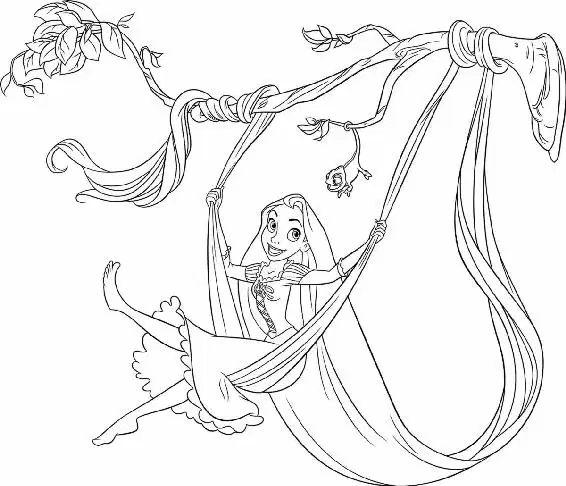

Flynn and Rapunzel dashed down the tunnel to the end of the passageway. Suddenly it opened out onto a vast cavern, which was dotted with huge stone pillars rising from the earth far below. Nearby was a rickety wooden dam holding back a vast amount of water. Flynn took one look behind him at the stampeding horse and guardsmen. He glanced down at the Stabbington brothers waiting for him at the base of the crevice.
Suddenly, he saw Rapunzel throw her hair across a large divide, lassoing a sturdy piece of stone. Tossing Flynn her frying pan, she swung across the crevice, landing safely on the outcrop.
Then the guardsmen were upon him.
“Ha!” Flynn shouted as he hit one sword after another out of the guards’ hands and knocked them unconscious. Rapunzel’s pan was quite a weapon.
Then Flynn saw him: Maximus. The horse grasped a sword in his teeth. CLANG! Pan clashed against sword until Maximus knocked the pan right out of Flynn’s hand. Just in the nick of time, Flynn heard Rapunzel call out to him. She tossed her long hair toward Flynn, and he grasped it. A fierce determination welled up inside her. She had done this before, many times, in the tower. It was like jumping from the rafters. Deftly, she looped her hair around an outcropping on her pillar and watched Flynn swing out over the canyon. She was aiming for him to glide all the way down to the bottom and make a soft landing.
As for Flynn, he felt as if he were flying! He had once again escaped Maximus and now was ready to make a landing! Then he saw the Stabbingtons. He had forgotten about them. They were standing there, right in his path, waiting with swords drawn. Flynn felt himself pulled upward as Rapunzel yanked on her hair.
He soared right over the Stabbingtons’ heads! Flynn yelled, delighted — and then crashed right into a long water drain. The wooden contraption served as a funnel for excess water to leak out of the dam and wind its way to the base of the canyon. Flynn scrambled atop the wooden chute as Rapunzel prepared to swing down to the ground.
But a furious Maximus refused to give up. Rearing up on his hind legs, he knocked a large board from the dam above. It fell exactly as Maximus planned — making a bridge for him and the guards to run to the next pillar down, a bit closer to Flynn.
But the broken board had another effect: the rickety wooden dam loosened and cracked. Water began spurting through the dam’s increasing number of crevices, threatening an explosive flood at any moment!
Flynn was terrified. The gigantic dam was about to burst, but he couldn’t get to Rapunzel. And the Stabbingtons were right there, ready to attack both of them. Quickly, Rapunzel threw her hair again, watching it twirl and wrap perfectly around a sturdy rock. With her hair firmly anchored, she swung down toward the ground, slipping to a landing. She was unharmed, but the Stabbingtons were racing straight toward her!
Flynn jumped into the wooden drainage chute and slid down toward Rapunzel.
Dashing forward, Flynn tried to gauge where she might come to a stop. Then he saw it: she was on a collision course with the rocky floor of the cavern.
Flynn raced and dove. At the last possible moment, he caught her!
